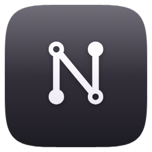

NexoraSeus projetos, conversas e arquivos juntos. Quem precisa de você aparece primeiro.
O Nexora usa o seu Claude Code, com a sua conta e o seu plano. Ele não vê sua senha nem seu token.
Um projeto é a pasta do seu código. Traga os que você já abriu no VS Code ou escolha as pastas.
Com o GitHub CLI, o Nexora mostra as issues dos seus projetos e o estado do PR de cada sessão. Pode pular: o resto funciona sem ele.
Comece por um destes. Em Configurações há mais temas, inclusive animados, e dá para aumentar o texto.
Alguns atalhos para começar. O botão de ajuda, na barra da esquerda, abre esta apresentação de novo.